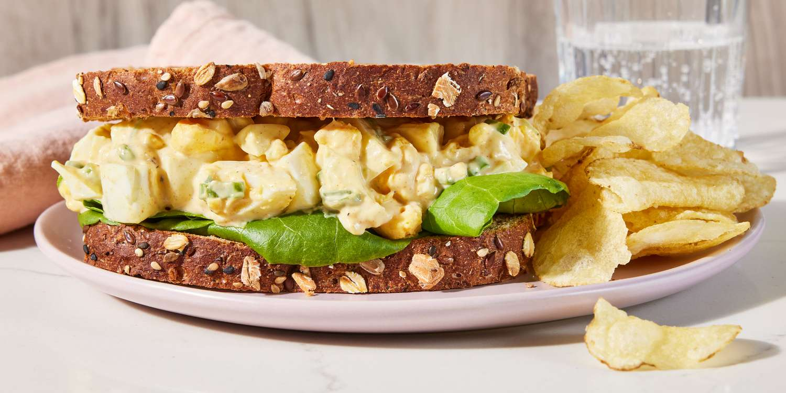

Egg Salad
Home

This egg salad recipe is the best and easy to make with chopped hard-boiled eggs, mayonnaise, and mustard. I like to add green onions for some color and crunch. It tastes wonderful in a sandwich and will definitely be devoured at picnics! It's really good on rye.
Ingredients
- 8 large eggs
- ½ cup mayonnaise
- ¼ cup chopped green onion
- 1 teaspoon prepared yellow mustard
- ¼ teaspoon paprika
- salt and pepper to taste
Directions
- Gather all ingredients.
- Place eggs in a saucepan and cover with cold water. Bring water to a boil and immediately remove from heat. Cover and let eggs stand in hot water for 10 to 12 minutes.
- Remove eggs from hot water; cool, peel, and chop.
- Place chopped eggs in a bowl; stir in mayonnaise, green onion, and mustard. Season with paprika, salt, and pepper.
- Stir and serve on your favorite bread, crackers, or salad greens.